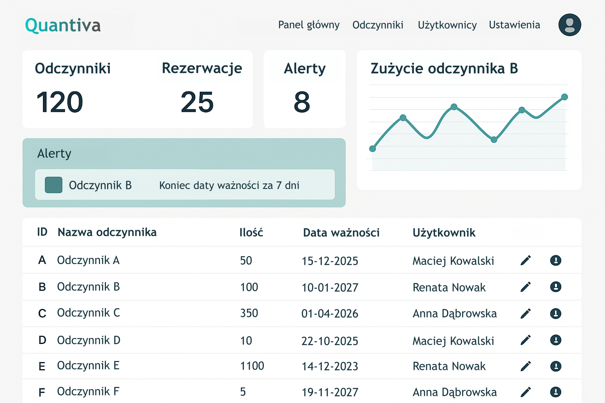

Zarządzaj ewidencją i bezpieczeństwem substancji z jedną platformą. Zacznij od modułu Quantiva Label do automatycznego generowania etykiet zgodnych z wymogami BHP.
Szczegóły Dołącz do pilotażu Quantiva Label 🏷️
Quantiva to rozwijana w Polsce modułowa platforma dla laboratoriów badawczych, tworzona przez i dla naukowców 👩🏻🔬👨🏻🔬
Naszą misją jest zastąpienie pasywnych arkuszy kalkulacyjnych inteligentnym ekosystemem zarządzania laboratorium. Quantiva stanowi centralną platformę Twojej jednostki, którą rozbudowujesz o konkretne narzędzia w zależności od potrzeb:
Moduł Quantiva Label (dostępny teraz): Twój pierwszy krok do automatyzacji. Odpowiada za bezpieczne i zgodne z przepisami BHP etykietowanie substancji.
Moduł Quantiva Inventory (w przygotowaniu): Rozszerzenie platformy o pełną ewidencję, kody QR/RFID i śledzenie stanów magazynowych w czasie rzeczywistym.
System jest rozwijany we współpracy z laboratoriami akademickimi, co gwarantuje jego pełną zgodność z realnymi procedurami BHP oraz specyfiką pracy naukowej.
Tworzenie etykiet chemicznych w kilka sekund na podstawie nazwy substancji
Automatyczne dodawanie wymaganych informacji, takich jak piktogramy GHS i zwroty H
Bezpośredni wydruk etykiety, odpowiednio przyciętej i gotowej do naklejenia
Gotowe szablony dla różnych zastosowań: odczynniki, roztwory, próbki lub odpady chemiczne
Uzupełnij stężenie, datę przygotowania, osobę odpowiedzialną i dodatkowe uwagi
Rejestr wygenerowanych etykiet umożliwia szybkie sprawdzenie kto i kiedy przygotował oznaczony roztwór oraz zapewnia administratorowi dostęp do pełnej historii etykiet w całym systemie
Oznaczanie substancji i roztworów to jedna z najczęstszych czynności wykonywanych w laboratorium. Quantiva Label upraszcza ten proces, umożliwiając szybkie generowanie czytelnych i zgodnych z przepisami etykiet. To pierwszy element platformy Quantiva, który wprowadza automatyzację do codziennej pracy laboratoryjnej.
Kolejnym etapem rozwoju platformy jest Quantiva Inventory – moduł umożliwiający prowadzenie cyfrowego rejestru odczynników oraz zarządzanie ich stanem w laboratorium i całej uczelni.
Możliwość przypisywania odczynników do konkretnych użytkowników, projektów, badań oraz rezerwacje odczynnika z wyprzedzeniem
Inteligentne skanowanie etykiet odczynników i automatyczne dodawanie nowego odczynnika do bazy
Tworzenie raportów zużycia odczynników przez poszczególnych użytkowników i cały zespół
Obsługa kodów QR oraz systemu RFID do szybkiej identyfikacji i lokalizacji odczynnika zintegrowane z drukowaniem etykiet z kodami QR
Śledzenie zużycia odczynnika oraz powiadomienia o jego niskim stanie
Różne poziomy uprawnień użytkowników (student, doktorant, pracownik) do edycji i usuwania wpisów, dodawania nowych użytkowników, generowania zamówień i raportów
Dzięki tej funkcjonalności Główni Inspektorzy BHP oraz administratorzy mogą:
Równolegle rozwijany jest moduł Quantiva Inventory, przeznaczony do prowadzenia rejestru odczynników chemicznych i zarządzania ich stanem w laboratorium. Jego wdrożenie planowane jest w niedługim czasie jako kolejny element platformy Quantiva.
Zautomatyzuj generowanie etykiet chemicznych zgodnych z przepisami BHP. Oferujemy możliwość bezpłatnego wdrożenia testowego w Twojej jednostce, aby umożliwić sprawdzenie skuteczności systemu w codziennej pracy laboratorium.
Zasady i korzyści pilotażu:
Zgłoś laboratorium do pilotażu: 📧 kontakt@quantiva.pl
Copyright © Sebastian Jarczewski
Chcesz dowiedzieć się więcej? Napisz do nas 📧 kontakt@quantiva.pl
Quantiva - projekt rozwijany w Polsce. 🇵🇱